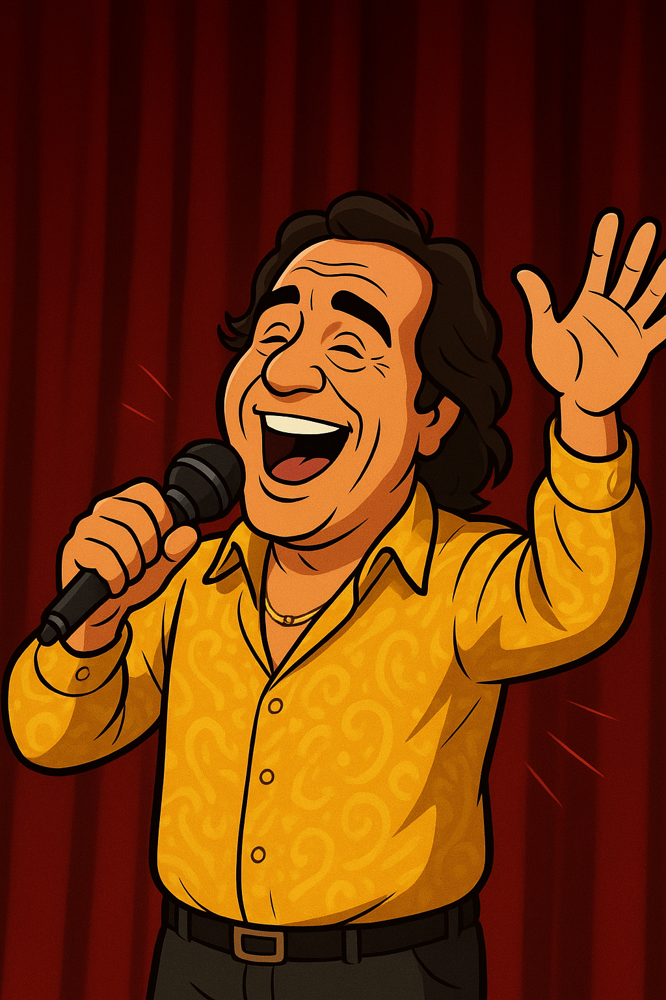

Rodolfo Aicardi
Cantante – Protagonista de la historia
Talento musical que inspira generaciones.

Rodolfo Aicardi es un ícono de la música tropical colombiana, cuya vida artística ha marcado generaciones completas por su voz, carisma y estilo inolvidable. Su historia inspira a miles de jóvenes a perseguir sus sueños musicales.
Guía y apoyo emocional
Inspira valores y amor por la música.
La abuela representa el pilar emocional de la familia y la principal guía en los primeros años de Rodolfo. Con su cariño y sabiduría, moldea su carácter y le transmite amor por el arte.
Admirador joven
Representa la nueva generación inspirada por Rodolfo.
Mateo simboliza la influencia del legado musical de Rodolfo en la juventud actual. Su admiración muestra cómo la música puede conectar épocas y generaciones.